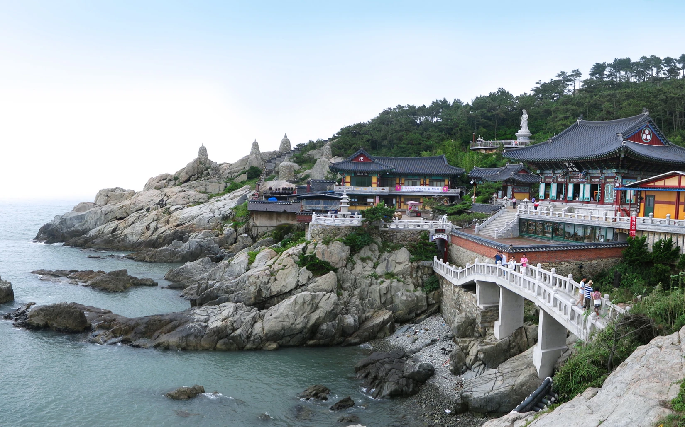

01 / 海岸慢時光
01 / 海岸慢時光
一節車廂，一整片藍
藍線公園膠囊列車，把海雲台的好風景留給窗邊的你。
宇創同行 / 海岸・山城・好時光
A LITTLE ESCAPE, A LOT TO REMEMBER
從海雲台的藍，到甘川洞的彩色山城；從汗蒸幕的暖，到廣安大橋的璀璨。讓經典景點與自在時光，在同一段旅程裡相遇。
THE MOMENTS
01 / 海岸慢時光
藍線公園膠囊列車，把海雲台的好風景留給窗邊的你。
走進 SPA LAND，以汗蒸幕的溫暖，切換假期節奏。
 03 / 海上夜色
03 / 海上夜色
遊艇夜遊廣安海岸，換個角度欣賞釜山城市風景。
TASTE THE JOURNEY
從明倫進士韓式烤肉、海鮮刀削麵，到松葉長腳蟹、鍋巴人蔘燉雞與蒸海鮮龍蝦，五天嚐遍釜山的在地滋味。
FIND YOUR WAY
選擇地點，查看位置與交通資訊。團體行程依領隊安排，第四天可查詢自由活動景點。
THE WHOLE JOURNEY, AT A GLANCE
以區域呈現相對位置，用不同顏色區分每日安排；D4 為自由活動參考。
地圖以 Google 地點查詢顯示；商圈、海灘與遊艇區域不代表集合點。若內嵌地圖無法顯示，可點「Google 地圖位置」開啟。韓國部分路線或導航模式可能不支援，請在地圖 App 核對，勿以此作為團體接送或車程保證。
各景點開放時間及預約場次請以出團前通知為準。飯店地圖為候選住宿的位置參考。
TRAVEL QUOTATION
宇創工程・釜山五日
每人 NT$33,800
確認成行後，須簽署機位合作同意書。航空公司、班號、起降時間及航廈待航空公司確認，並以出團通知為準。
| 報價條件 | 說明 |
|---|---|
| 暫定出發日 | 2027/4/15（四）或 4/21（三），實際出發日待確認。 |
| 成團人數 | 每車 20 位起 |
| 團費包含 | 團體機票、行程所列住宿／交通／門票／餐食、旅行業責任保險與履約保證保險、領隊／導遊／司機服務費，以及遊韓便利包與團體用品。 |
| 團費未含 | 單房差、護照或簽證代辦、個人加購保險、台灣住家至桃園機場接送及私人消費。 |
飯店晚數與實際入住日期以最終通知為準。訂金及付款資訊請洽旅行服務窗口。
DAY BY DAY
點選日期查看每日安排。抵達與返程當天的集合及行程時間，將依確認後的航班調整。
下載報價 PDF ↓桃園國際機場 → 釜山金海機場 → 新世界 Centum City → SPA LAND 汗蒸幕 → 飯店入住
＋
從桃園搭機抵達釜山金海機場，開啟五天的港都假期。
逛逛百貨商場，為旅程添一點自在的購物時光。
體驗韓式汗蒸幕，舒展搭機後的疲憊。
晚間依團體安排入住，為隔天的行程休息充電。
—
馬鈴薯燉豬骨湯
明倫進士韓式烤肉吃到飽
韓式炸雞（每房一份）
彩妝站 → 甘川洞文化村 → 松島海上纜車（單程） → 龍宮雲橋 → P. Ark 影島咖啡館 → 南浦洞購物商圈
＋
安排一站彩妝購物，看看韓系美妝與保養品。
漫步彩色屋舍與藝術巷弄，從山坡望向釜山的港灣。
含單程纜車券，從空中俯瞰松島海岸，再到雲橋欣賞岩岸風景。
在影島港邊的咖啡館歇腳，留一段時間看看海景。
到南浦洞散步逛街，再依團體安排返回飯店。
飯店內
海鮮刀削麵
松葉長腳蟹豪華套餐（兩人一隻），含石鍋蟹膏飯、開胃菜、生魚片、壽司、酥炸油淋雞、水刺身魚卵、大醬湯、沙拉及甜點
藍線公園膠囊列車 → X the SKY・星巴克・海濱步道 → 海雲台小吃一條街 → 海東龍宮寺 → LUGE → 豪華遊艇廣安夜遊
＋
搭乘繽紛的天空膠囊，沿著海雲台海岸慢慢前行。
登上觀景台俯瞰海岸與城市，造訪高空星巴克，再沿海濱步道散步。
走進小吃聚集的街區，感受海雲台的市場氛圍。
沿著海岸探訪依海而建的寺院，欣賞岩岸與浪花。
含兩次體驗券，沿著彎道感受滑車的速度與樂趣。
搭遊艇從海上欣賞廣安大橋和城市夜色，航次依當日安排。
飯店內
韓國料理冠軍・鍋巴人蔘燉雞套餐
皇帝潛水艇・皇帝蒸海鮮龍蝦一隻雞
全日自由活動，自由挑選喜愛的城市風景
＋
全日自由活動。午、晚餐、個人交通及另購門票自理。以下為自由安排參考。
南浦洞國際市場、光復洞時裝街、西面商圈；也可前往 E-mart 或樂天超市選購伴手禮。
可考慮樂天世界 Magic Forest 或富平罐頭夜市，門票與交通自理。
若出發期間有主場賽事，可自行規劃觀賽。2027 年賽程與售票資訊待官方公布，未保證安排。
飯店內
自理
自理
飯店 → 釜山金海機場 → 桃園國際機場
＋
早餐後整理行囊，依約定時間前往釜山國際機場，搭機返回台灣。
飯店內
—
—
WHERE WE STAY
以下為候選飯店。團體標準房以雙人一室規劃，實際入住飯店、房型及晚數以最終通知為準。

西面商圈
位於西面商圈，逛街與用餐方便。部分房型採公寓式配置，可參考飯店官網的房型及入住資訊。
飯店官網 ↗ 地圖位置 ↗
凡一站一帶
公寓式住宿，鄰近自由平和路及凡一站一帶。部分房型有洗衣設備，實際配置依入住安排。
飯店資訊 ↗ 地圖位置 ↗
西面・釜田市場一帶
位於西面與釜田市場一帶，步行可前往釜田市場，也方便搭乘地鐵探索市區。
飯店資訊 ↗ 地圖位置 ↗也可能安排同級商務飯店。
A FEW THINGS TO KNOW
活動場次、餐食與住宿以出團說明會及最終通知為準。
實際景點順序依出團說明會與現場安排。照片供行程示意。
YOUR TRAVEL TEAM
▋主題旅遊部 ▋